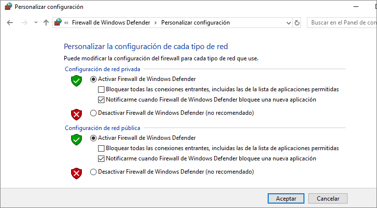

Cortafuegos
En cuanto a la configuración del cortafuegos en los sistemas, se debe hacer según las necesidades de cada usuario y pensando en que cuantas más aplicaciones se permitan a través de él más peligro tendremos para nuestro sistema.
En la imagen se aprecia la ventana de configuración del cortafuegos de Windows.
La opción más segura es tenerlo activado pero en ocasiones existe la necesidad de permitir ciertas aplicaciones o procesos para lo que se emplea la opción de Excepciones.
Detección de intrusos
Conocer si hay intrusos en el sistema, aunque no estén causando ningún daño en ese momento, también es una buena medida preventiva. Para ello, existen herramientas diseñadas específicamente para ello. Las herramientas utilizadas para la detección de intrusos se denominan también IDS (Intrusion Detection System). El funcionamiento de estas herramientas se basa en el análisis del tráfico de red y la comparación con comportamientos estándar de los intrusos.
En la imagen se puede observar el sitio de descarga de Snort. Es una herramienta con muchos modificadores para sus comandos, por lo que su manejo requiere de un tiempo de aprendizaje.
Es conveniente tener claro que se pretende de ella y en consecuencia buscar exclusivamente cómo poder hacerlo sin pretender dominar todas sus posibilidades a menos que sea estrictamente necesario.
Existen dos tipos de sistemas de detección de intrusos:
- Host IDS: También llamadas HIDS. Estas herramientas detectan intrusiones en los hosts.
- Network IDS: También llamadas NIDS. Estas herramientas detectan las intrusiones en toda la red.
La diferencia entre ambos es que los HIDS solamente actúan a nivel local, mientras que los NIDS lo hacen a nivel de red por lo que deben tener un dispositivo de red configurado en modo promiscuo